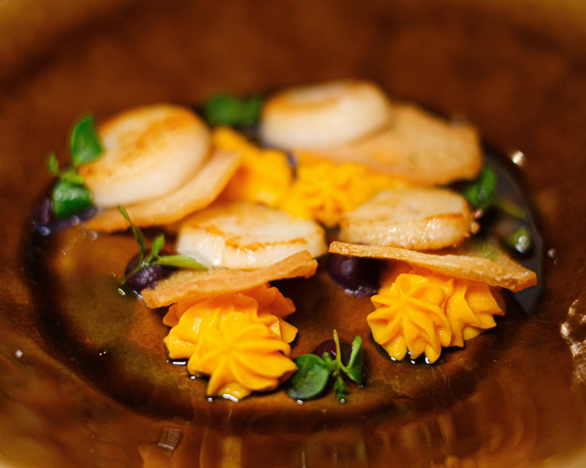
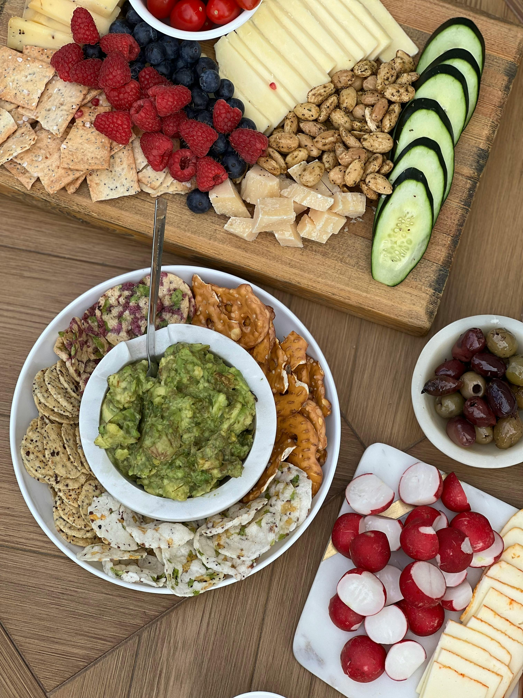
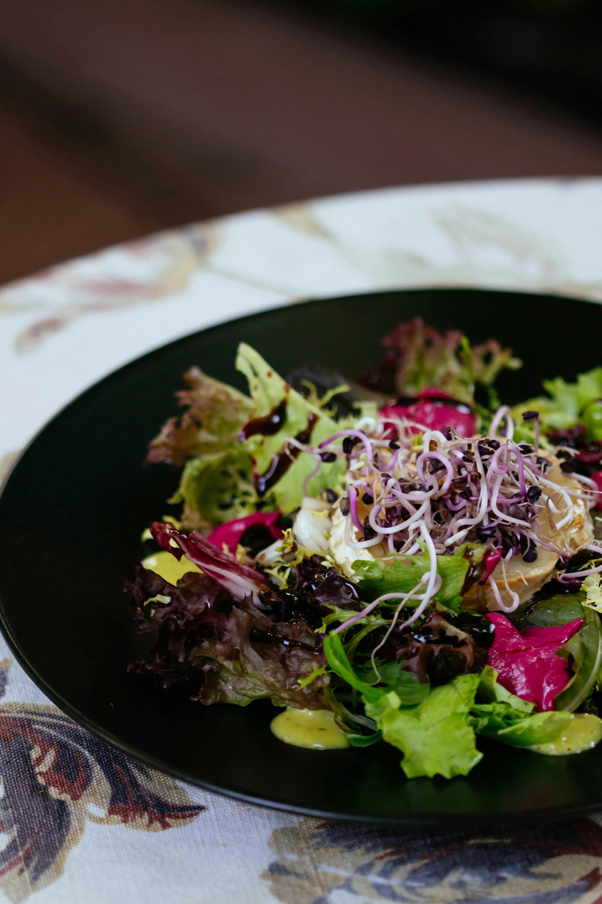

YUMMY FOODS
Welcome To Yummy Foods
Food is one of the basic necessities of life. Food contains nutrients—substances essential for the growth, repair, and maintenance of body tissues and for the regulation of vital processes. Nutrients provide the energy our bodies need to function. The energy in food is measured in units called calories.
|  |  |
| Awesome Taste | Awesome Ingredients |
Food is usually of plant, animal, or fungal origin and contains essential nutrients such as carbohydrates, fats,proteins, vitamins, or minerals. The substance is ingested by an organism and assimilated by the organism's cells to provide energy, maintain life, or stimulate growth.
Burgers Collection Bonanza
A hamburger, or simply a burger, is a dish consisting of fillings—usually a patty of ground meat, typically beef—placed inside a sliced bun or bread roll. The patties are often served with cheese, lettuce, tomato, onion, pickles, bacon or chilis with condiments such as ketchup, mustard, mayonnaise, relish or a "special sauce", often a variation of Thousand Island dressing and are frequently placed on sesame seed buns

|

|

|

|
| Burger One | Burger Two | Burger Three | Burger Four |
A burger is a patty of ground beef grilled and placed between two halves of a bun. Slices of raw onion, lettuce, bacon,mayonnaise, and other ingredients add flavor. Burgers are considered American food but are popular around the world.In Japan, teriyaki burgers are popular.
Fire and Ice with our Fries
french fries, side dish or snack typically made from deep-fried potatoes that have been cut into various shapes,especially thin strips.

|

|

|

|
| Fries One | Fries Two | Fries Three | Fries Four |
French fries are made from potatoes that have been cut into thin strips, washed briefly in cold water, partly dried to remove surface moisture and deep fried in vegetable oil to a light golden colour.
Eat Healthy and Stay Healthy
A healthy diet includes the following: Fruit, vegetables, legumes (e.g. lentils and beans), nuts and whole grains (e.g.unprocessed maize, millet, oats, wheat and brown rice).

|

|

|
 |
| Healthy One | Healthy TwO | Healthy Three | Healthy Four |
A healthy diet is essential for good health and nutrition. It protects you against many chronic noncommunicable diseases, such as heart disease, diabetes and cancer.
Do Google and Eat Noodles

|

|

|

|
| Noodles One | Noodles Two | Noodles Three | Noodles Four |
Enjoy the Deserts
If you refer to an area as a food desert, you mean that there is little fresh or healthy food there. People living in so-called food deserts were at greater risk of poor diet and being overweight or obese.
| Desert One | Desert Two | Desert Three | Desert Four |
food desert, an impoverished area where residents lack access to healthy foods. Food deserts may exist in rural or urban areas and are associated with complex geographic and socioeconomic factors, as well as with poor diet and health disorders such as obesity.
Copyright © 2024, Yummy Foods
All Rights Reserved
developed and Maintained by pavanimalepati